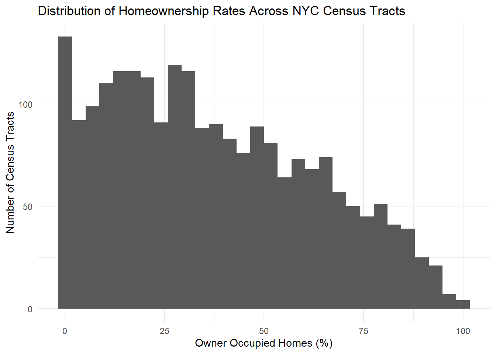
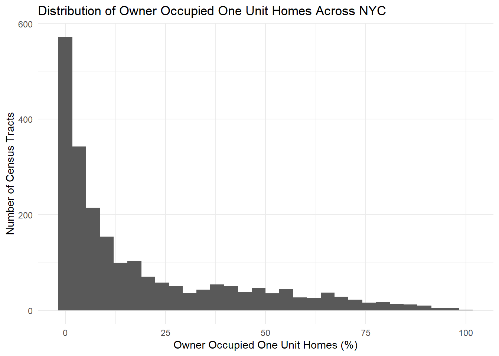
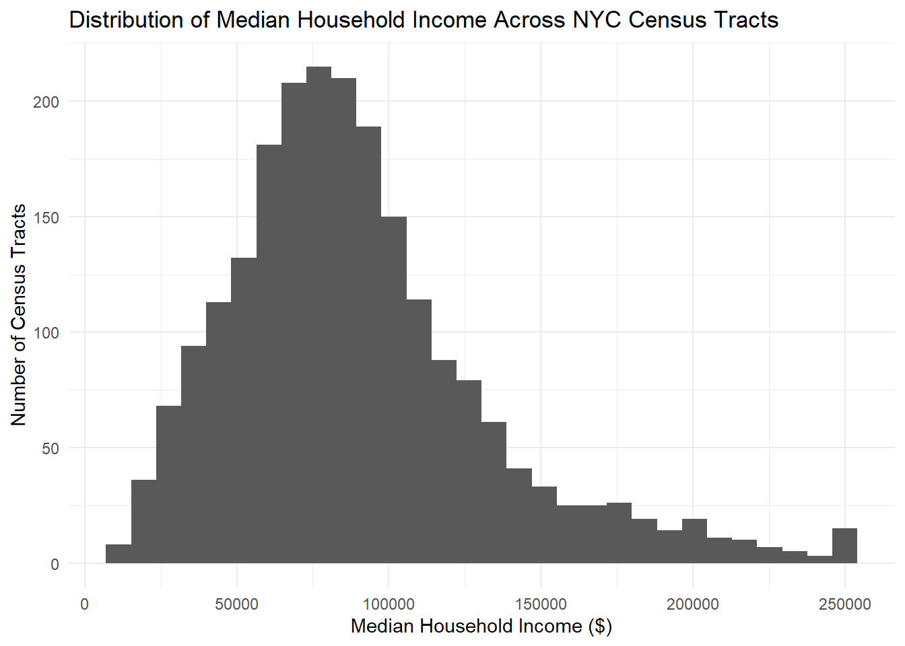
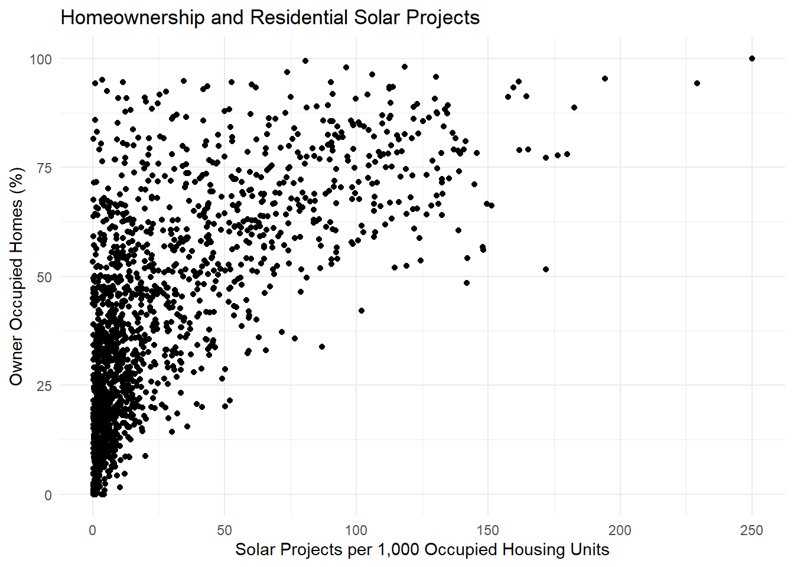
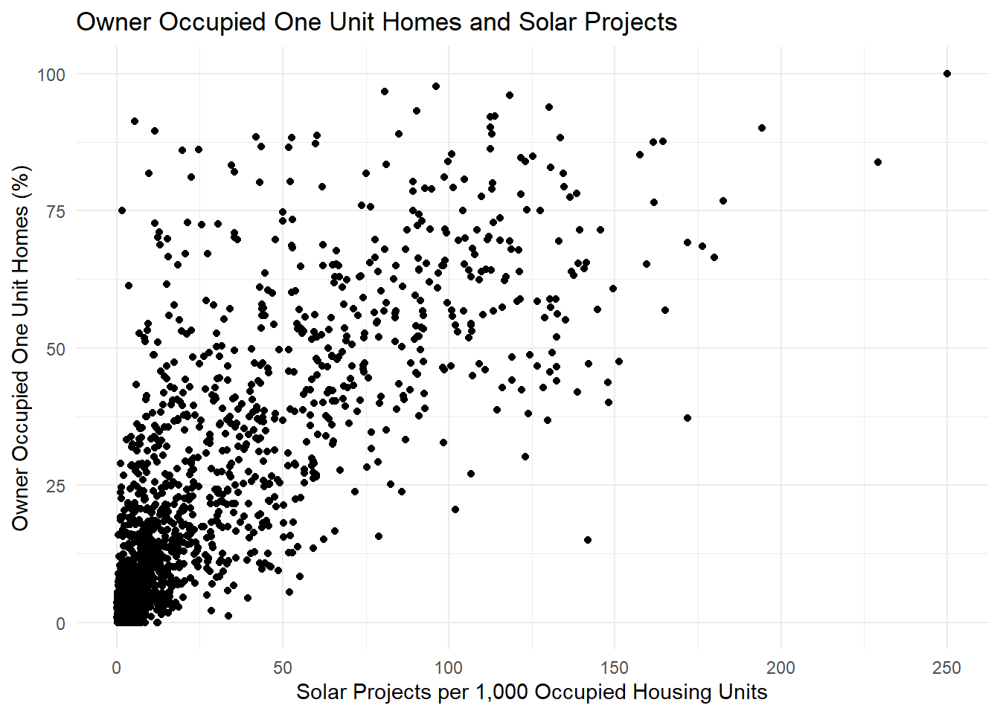
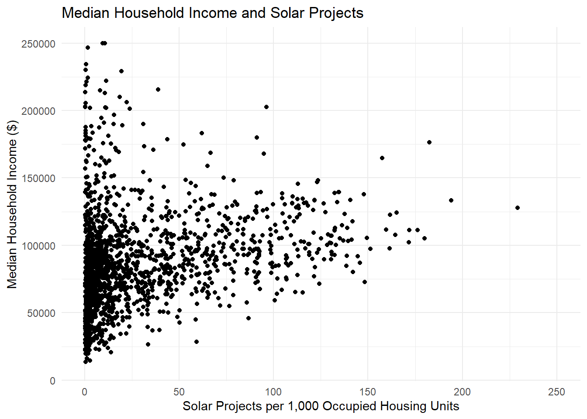
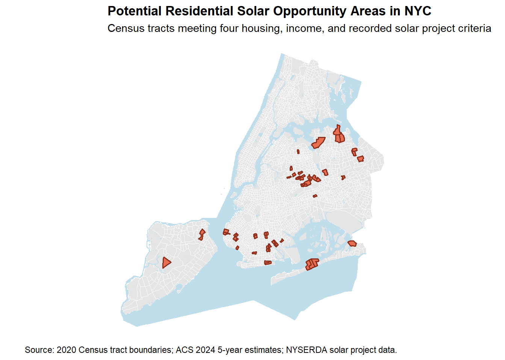

For this project, I plan to explore which neighborhoods in New York City may offer opportunities for expanded residential solar adoption. The motivation is to identify areas that have relatively low levels of existing solar installations despite having characteristics favorable for adoption, such as higher homeownership rates, household income, and suitable housing types. This analysis could help identify potential markets for solar installers while providing insight into differences in residential solar adoption across NYC. I plan to use residential solar installation data from the New York State Energy Research and Development Authority (NYSERDA) and demographic and housing data from the U.S. Census Bureau’s 2024 American Community Survey (ACS) 5-year estimates. Using census tracts as the geographic unit, I will clean, transform, and combine the datasets to compare solar adoption rates with neighborhood characteristics. I then plan to use descriptive statistics, visualizations, and statistical analysis to identify patterns and highlight areas with potential for greater solar adoption.
Introduction
Definitions
The analysis uses census tracts as its geographic unit. Census tracts are small geographic areas defined by the U.S. Census Bureau to provide demographic statistics at the neighborhood level.
The housing categories used in this analysis distinguish between one unit detached homes (standalone houses), one unit attached homes (such as townhouses sharing walls), and small buildings with two to four units (multifamily buildings sharing a roof). The analysis focuses only on owner occupied one unit homes.
Code Base Deliverable
Load libraries
library(tidyverse)
Warning: package 'tidyverse' was built under R version 4.6.2
── Attaching core tidyverse packages ──────────────────────── tidyverse 2.0.0 ──
✔ dplyr 1.2.1 ✔ readr 2.2.0
✔ forcats 1.0.1 ✔ stringr 1.6.0
✔ ggplot2 4.0.3 ✔ tibble 3.3.1
✔ lubridate 1.9.5 ✔ tidyr 1.3.2
✔ purrr 1.2.2
── Conflicts ────────────────────────────────────────── tidyverse_conflicts() ──
✖ dplyr::filter() masks stats::filter()
✖ dplyr::lag() masks stats::lag()
ℹ Use the conflicted package (<http://conflicted.r-lib.org/>) to force all conflicts to become errors
# Retrieves American Community Survey (ACS) data from the Census API.library(tidycensus)
Warning: package 'tidycensus' was built under R version 4.6.2
# Access U.S. Census Bureau geographic data.library(tigris)
Warning: package 'tigris' was built under R version 4.6.2
To enable caching of data, set `options(tigris_use_cache = TRUE)`
in your R script or .Rprofile.
# Manipulate and visualize spatial data.library(sf)
Warning: package 'sf' was built under R version 4.6.2
Linking to GEOS 3.14.1, GDAL 3.12.1, PROJ 9.7.1; sf_use_s2() is TRUE
Census data retrieval (optional)
# Load the 2024 ACS 5-year reference table, which provides variable names for identifying the estimates needed for the analysis.acs_variables <-load_variables(2024, "acs5")
# Retrieve selected 2024 ACS 5-year estimates from the API at Census Tract level for NYC counties. Assign column names for the housing and income variables of interest for analysis.nyc_acs <-get_acs(geography ="tract",variables =c(total_occupied ="B25032_001",owner_occupied ="B25032_002",own_1_detached ="B25032_003",own_1_attached ="B25032_004",own_2_units ="B25032_005",own_3_4_units ="B25032_006",median_income ="B19013_001" ),state ="NY",county =c("Bronx", "Kings", "New York", "Queens", "Richmond"),year =2024,survey ="acs5",output ="wide")
# Save retrieved ACS data as a CSV for reproducibility.write_csv(nyc_acs, "nyc_acs_2024.csv")
NYSERDA data import (optional)
# Load NYSERDA solar project dataset from local CSV file because file size exceeds GitHub's limits.nyserda_raw <-read_csv("rawsolardata/Solar_Electric_Programs_Reported_by_NYSERDA__Beginning_2000_20261123.csv",show_col_types =FALSE)
# Filter NYSERDA dataset to include completed residential solar projects in NYC counties. Convert the Date Completed column to Date format for potential use in the analysis.nyc_solar <- nyserda_raw %>%filter( County %in%c("Bronx", "Kings", "New York", "Queens", "Richmond"), Sector =="Residential",`Project Status`=="Complete" ) %>%mutate(`Date Completed`= lubridate::mdy(`Date Completed`) )
# Save prepared NYSERDA data for reproducibility.write_csv(nyc_solar, "nyc_solar_2026.csv")
Load datasets
# These prepared CSV files allow analysis to be reproduced without requiring API access or downloading the original NYSERDA dataset.nyc_acs <-read_csv("nyc_acs_2024.csv")
Rows: 2327 Columns: 16
── Column specification ────────────────────────────────────────────────────────
Delimiter: ","
chr (1): NAME
dbl (15): GEOID, total_occupiedE, total_occupiedM, owner_occupiedE, owner_oc...
ℹ Use `spec()` to retrieve the full column specification for this data.
ℹ Specify the column types or set `show_col_types = FALSE` to quiet this message.
nyc_solar <-read_csv("nyc_solar_2026.csv")
Rows: 56670 Columns: 50
── Column specification ────────────────────────────────────────────────────────
Delimiter: ","
chr (39): Reporting Period, Project Number, Legacy Project Number, City, Co...
dbl (8): ZIP Code, Census Tract, Total Inverter Quantity, Total PV Module ...
lgl (2): CESIR Number, Street Address
date (1): Date Completed
ℹ Use `spec()` to retrieve the full column specification for this data.
ℹ Specify the column types or set `show_col_types = FALSE` to quiet this message.
Data transformation
# Convert GEOID and Census Tract to character for accurate matching and joining.nyc_acs <- nyc_acs %>%mutate(GEOID =as.character(GEOID))nyc_solar <- nyc_solar %>%mutate(`Census Tract`=as.character(`Census Tract`))
# Examine the overlap between the NYSERDA and ACS datasets by identifying unique Census Tracts in each and counting how many are shared. Missing tracts are excluded, as well as some NYSERDA tracts that do not match the 2024 ACS GEOIDs, potentially due to geographic boundary changes.solar_tracts <-unique(na.omit(nyc_solar$`Census Tract`))print(paste("Solar tracts:", length(solar_tracts)))
# Filter the NYSERDA dataset to retain projects with tracts matching the ACS GEOIDs. Group by Census Tract and count the number of completed projects in each tract. The resulting dataset contains one row per tract with at least one matched project.solar_by_tract <- nyc_solar %>%filter(`Census Tract`%in% nyc_acs$GEOID) %>%group_by(`Census Tract`) %>%summarise(solar_projects =n(),.groups ="drop" )
# Combine the solar project counts with the ACS dataset on Census Tract. A left join keeps all ACS Census Tracts while adding their corresponding number of solar projects if a match exists. This creates dataset containing both solar projects and neighborhood characteristics for further analysis.nyc_analysis <- nyc_acs %>%left_join( solar_by_tract,by =c("GEOID"="Census Tract") )
Create Analysis Variables
# Calculate the percentage of occupied units that are owner occupied in each census tract. This will be used to examine the relationship between homeownership and solar projects.nyc_analysis <- nyc_analysis %>%mutate(owner_pct = (owner_occupiedE / total_occupiedE) *100)# Calculate the percentage of occupied units that are owner occupied, one unit detached or attached homes in each census tract. This helps examine whether neighborhoods with a greater share of this housing type have more solar projects.nyc_analysis <- nyc_analysis %>%mutate(single_family_pct = ( (own_1_detachedE + own_1_attachedE) / total_occupiedE ) *100 )# Calculate the number of NYSERDA solar projects per 1,000 occupied units in each tract. This measure accounts for differences in unit count in census tracts.nyc_analysis <- nyc_analysis %>%mutate(solar_per_1000 = (solar_projects / total_occupiedE) *1000 )# Calculate the percentage of occupied units that are owner occupied in small (two to four units) buildings.nyc_analysis <- nyc_analysis %>%mutate(multi_2_4_pct = ( (own_2_unitsE + own_3_4_unitsE) / total_occupiedE ) *100 )
Exploratory Data Analysis
# Calculate summary statistics for homeownership, housing type, and median household income across NYC census tracts.nyc_analysis %>%select(owner_pct, single_family_pct, multi_2_4_pct, median_incomeE) %>%summary()
owner_pct single_family_pct multi_2_4_pct median_incomeE
Min. : 0.00 Min. : 0.000 Min. : 0.000 Min. : 11094
1st Qu.: 15.70 1st Qu.: 1.580 1st Qu.: 1.104 1st Qu.: 60632
Median : 33.15 Median : 8.279 Median : 6.853 Median : 82676
Mean : 37.18 Mean : 18.956 Mean : 9.344 Mean : 89600
3rd Qu.: 56.74 3rd Qu.: 29.915 3rd Qu.: 14.572 3rd Qu.:108307
Max. :100.00 Max. :100.000 Max. :100.000 Max. :250001
NAs :96 NAs :96 NAs :96 NAs :128
# Visualize the distribution of homeownership rates across NYC census tracts to examine variation in the proportion of owner-occupied homes.ggplot(nyc_analysis, aes(x = owner_pct)) +geom_histogram(bins =30) +labs(title ="Distribution of Homeownership Rates Across NYC Census Tracts",x ="Owner Occupied Homes (%)",y ="Number of Census Tracts" ) +theme_minimal()
Warning: Removed 96 rows containing non-finite outside the scale range
(`stat_bin()`).

# Compare the number of census tracts with renter-majority, owner-majority, and equal homeownership rates.nyc_analysis %>%summarise(renter_majority =sum(owner_pct <50, na.rm =TRUE),owner_majority =sum(owner_pct >50, na.rm =TRUE),equal =sum(owner_pct ==50, na.rm =TRUE) )
The distribution shows that homeownership rates vary considerably across NYC census tracts. More than two thirds of tracts have homeownership rates below 50%, indicating that renter-occupied units are more prevalent.
# Visualize the distribution of owner occupied one unit homes across tracts.ggplot(nyc_analysis, aes(x = single_family_pct)) +geom_histogram(bins =30) +labs(title ="Distribution of Owner Occupied One Unit Homes Across NYC",x ="Owner Occupied One Unit Homes (%)",y ="Number of Census Tracts" ) +theme_minimal()
Warning: Removed 96 rows containing non-finite outside the scale range
(`stat_bin()`).

The distribution is right-skewed, indicating that owner occupied one unit homes represent a small share of occupied units in most NYC census tracts.
# Visualize the distribution of median household income across NYC census tracts to examine income variation between neighborhoods.ggplot(nyc_analysis, aes(x = median_incomeE)) +geom_histogram(bins =30) +labs(title ="Distribution of Median Household Income Across NYC Census Tracts",x ="Median Household Income ($)",y ="Number of Census Tracts" ) +theme_minimal()
Warning: Removed 128 rows containing non-finite outside the scale range
(`stat_bin()`).

The distribution of median household income is bell-shaped but slightly right-skewed. Most census tracts fall within the middle-income ranges, while a smaller number of tracts have substantially higher median household incomes.
# Visualize the relationship between homeownership rates and solar projects.ggplot(data = nyc_analysis, aes(x = solar_per_1000, y = owner_pct)) +geom_point() +labs(title ="Homeownership and Residential Solar Projects",x ="Solar Projects per 1,000 Occupied Housing Units",y ="Owner Occupied Homes (%)" ) +theme_minimal()
Warning: Removed 719 rows containing missing values or values outside the scale range
(`geom_point()`).

The scatterplot suggests a positive relationship between homeownership rates and solar projects. Census tracts with higher homeownership rates tend to have more recorded NYSERDA solar projects relative to their occupied units. However, considerable variation exists across tracts, suggesting that homeownership alone does not explain differences in number of solar projects.
# Visualize the relationship between owner occupied one unit homes and solar projects.ggplot(data = nyc_analysis, aes(x = solar_per_1000, y = single_family_pct)) +geom_point() +labs(title ="Owner Occupied One Unit Homes and Solar Projects",x ="Solar Projects per 1,000 Occupied Housing Units",y ="Owner Occupied One Unit Homes (%)" ) +theme_minimal()
Warning: Removed 719 rows containing missing values or values outside the scale range
(`geom_point()`).

The scatterplot suggests a positive relationship between owner occupied one unit homes and solar projects. Census tracts with a greater share of this housing type tend to have higher recorded NYSERDA solar projects relative to their occupied units.
# Visualize the relationship between median household income and solar projects.ggplot(data = nyc_analysis, aes(x = solar_per_1000, y = median_incomeE)) +geom_point() +labs(title ="Median Household Income and Solar Projects",x ="Solar Projects per 1,000 Occupied Housing Units",y ="Median Household Income ($)" ) +theme_minimal()
Warning: Removed 729 rows containing missing values or values outside the scale range
(`geom_point()`).

The scatterplot suggests a positive association between median household income and solar projects. However, the relationship appears less consistent than the relationships observed with homeownership and housing type. Census tracts with relatively low solar project activity show considerable variation in household income, suggesting that income alone may not explain differences in solar project activity.
Statistical Analysis
# Remove missing and infinite values to ensure valid observations for analyzing the relationship between homeownership and solar projects.homeownership_data <- nyc_analysis %>%filter(is.finite(solar_per_1000),is.finite(owner_pct) )
# Perform a Spearman rank correlation to examine the direction and strength of the association between homeownership and solar projects.cor.test( homeownership_data$owner_pct, homeownership_data$solar_per_1000,method ="spearman",exact =FALSE)
Spearman's rank correlation rho
data: homeownership_data$owner_pct and homeownership_data$solar_per_1000
S = 195089778, p-value < 2.2e-16
alternative hypothesis: true rho is not equal to 0
sample estimates:
rho
0.718468
Spearman’s rank correlation indicates a strong positive association between homeownership rates and solar projects across NYC census tracts (ρ = 0.718, p < 0.001). This suggests that census tracts with higher percentages of owner occupied homes tend to have higher rates of recorded NYSERDA residential solar projects.
# Remove missing and infinite values to ensure valid observations for analyzing the relationship between owner occupied one unit homes and solar projects.single_family_data <- nyc_analysis %>%filter(is.finite(solar_per_1000),is.finite(single_family_pct) )
# Perform a Spearman rank correlation test to examine the relationship between owner occupied one unit homes and solar projects.cor.test( single_family_data$single_family_pct, single_family_data$solar_per_1000,method ="spearman",exact =FALSE)
Spearman's rank correlation rho
data: single_family_data$single_family_pct and single_family_data$solar_per_1000
S = 124455982, p-value < 2.2e-16
alternative hypothesis: true rho is not equal to 0
sample estimates:
rho
0.8203989
Owner occupied one unit homes had a stronger positive association with solar projects (ρ = 0.820) than the overall homeownership rate (ρ = 0.718). This suggests that housing type, in addition to homeownership, may be relevant to understanding differences in residential solar project activity across NYC census tracts.
# Remove missing and infinite values to ensure valid observations for analyzing the relationship between median income and solar projects.income_data <- nyc_analysis %>%filter(is.finite(solar_per_1000),is.finite(median_incomeE) )
# Perform a Spearman rank correlation test to examine the relationship between median income and solar projects.cor.test( income_data$median_incomeE, income_data$solar_per_1000,method ="spearman",exact =FALSE)
Spearman's rank correlation rho
data: income_data$median_incomeE and income_data$solar_per_1000
S = 442425376, p-value < 2.2e-16
alternative hypothesis: true rho is not equal to 0
sample estimates:
rho
0.3494793
Spearman’s rank correlation indicated a weak-to-moderate positive association between median household income and solar projects across NYC census tracts (ρ = 0.349, p < 0.001). This suggests that census tracts with higher median household incomes tend to have somewhat higher rates of recorded NYSERDA residential solar projects, although the relationship is weaker than those observed for homeownership and owner occupied one unit homes.
Identify opportunities for solar projects
Census tracts were selected as potential residential solar opportunity areas if they met four criteria: owner occupied one unit homes and homeownership rates above their respective third quartiles, median household income above the overall median, and recorded NYSERDA residential solar projects below the overall mean. These criteria identify areas with relatively favorable housing and income characteristics but comparatively lower recorded solar projects.
# Calculate thresholds for identifying potential solar opportunity areas.single_family_q3 <-quantile(nyc_analysis$single_family_pct, 0.75, na.rm =TRUE)owner_q3 <-quantile(nyc_analysis$owner_pct, 0.75, na.rm =TRUE)income_median <-median(nyc_analysis$median_incomeE, na.rm =TRUE)# Calculate mean solar activity using only finite values.solar_mean <-mean( nyc_analysis$solar_per_1000[is.finite(nyc_analysis$solar_per_1000)],na.rm =TRUE)# Select census tracts meeting all four criteria.opportunity_tracts <- nyc_analysis %>%filter(is.finite(single_family_pct),is.finite(owner_pct),is.finite(median_incomeE),is.finite(solar_per_1000), single_family_pct > single_family_q3, owner_pct > owner_q3, median_incomeE > income_median, solar_per_1000 < solar_mean )# Examine the selected census tracts.opportunity_tracts %>%select( GEOID, single_family_pct, owner_pct, median_incomeE, solar_per_1000 ) %>%arrange(solar_per_1000)
# A tibble: 3 × 2
borough n
<chr> <int>
1 Queens 31
2 Brooklyn 24
3 Staten Island 2
57 potential residential solar opportunity areas were identified across NYC. Most were located in Queens (31) and Brooklyn (24), while Staten Island had two qualifying tracts. No tracts in the Bronx or Manhattan met all four selection criteria. This suggests that the selected combination of housing, income, and solar project characteristics is concentrated primarily in Queens and Brooklyn.
Mapping potential opportunity areas
# Retrieve simplified 2020 Census tract boundaries for all five NYC boroughs.nyc_tracts <-tracts(state ="NY",county =c("Bronx", "Kings", "New York", "Queens", "Richmond"),year =2020,cb =TRUE)
# Extract GEOIDs of the selected solar opportunity tracts.candidate_geoids <- opportunity_tracts$GEOID# Identify selected tracts in the NYC geographic boundaries for mapping.nyc_tracts <- nyc_tracts %>%mutate(candidate = GEOID %in% candidate_geoids )
ggplot() +geom_sf(data = nyc_tracts,fill ="grey90",color ="white",linewidth =0.1 ) +geom_sf(data = nyc_tracts %>%filter(candidate),fill ="#E76F51",color ="#8C2F1C",linewidth =0.6 ) +labs(title ="Potential Residential Solar Opportunity Areas in NYC",subtitle ="Census tracts meeting four housing, income, and recorded solar project criteria",caption ="Source: 2020 Census tract boundaries; ACS 2024 5-year estimates; NYSERDA solar project data." ) +theme_minimal() +theme(axis.title =element_blank(),axis.text =element_blank(),axis.ticks =element_blank(),panel.grid =element_blank(),legend.position ="none",plot.title =element_text(face ="bold") )

Conclusion
Results
The analysis identified positive associations between three census tract characteristics and recorded NYSERDA residential solar projects across NYC. Owner occupied one unit homes had the strongest association (Spearman’s ρ = 0.820), followed by overall homeownership (ρ = 0.718). Median household income had a weaker, but still positive, association (ρ = 0.349). All three relationships were statistically significant (p < 0.001).
These findings suggest that housing characteristics, particularly the prevalence of owner occupied one unit homes, are more strongly associated with solar projects than median household income. However, these relationships do not establish causation for the higher number of solar projects.
Based on these findings, four criteria were used to identify potential residential solar opportunity areas: owner occupied one unit homes and homeownership rates above their respective third quartiles, median household income above the median, and recorded NYSERDA solar projects below the mean. This screening identified 57 census tracts. Most were located in Queens (31) and Brooklyn (24), while Staten Island had two qualifying tracts. No tracts in the Bronx or Manhattan met all four criteria.
The selected tracts represent areas with favorable housing and income characteristics but comparatively lower recorded NYSERDA solar projects. They may warrant further investigation as potential areas for expanded solar development.
Limitations
Several limitations should be considered.
First, the NYSERDA dataset includes residential projects reported through its programs and does not represent all solar installations in NYC. As a result, actual number of solar projects may be higher in some areas than the dataset indicates.
Second, the two datasets presented geographic identifier mismatches. The ACS data uses 2020 Census tract geography, while the NYSERDA documentation does not specify the geographic vintage of its tract identifiers. Only 1,615 of the 1,721 unique NYSERDA tract identifiers matched the ACS identifiers. This limited the number of projects that could be part of the analysis.
Third, the analysis identifies correlations rather than causation. Other factors that may influence residential solar development were not examined.
Finally, the analysis did not investigate other housing types such as small multifamily homes.
Future research
Future research could improve geographic matching between datasets, incorporate additional sources of solar projects data, and examine multifamily housing and other factors influencing solar adoption to provide a more comprehensive assessment of residential solar opportunities across NYC.
Walker, K. (n.d.). tidycensus: Load US Census boundary and attribute data as tidyverse- and sf-ready data frames. R package documentation. https://walker-data.com/tidycensus/
ChatGPT was used as an AI-assisted tool for understanding R code, troubleshooting errors, clarifying statistical concepts, and improving the organization and wording of project documentation. Data preparation, analysis, interpretation, and final project decisions were reviewed and completed by the author.